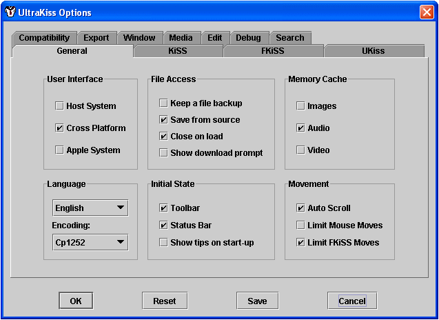
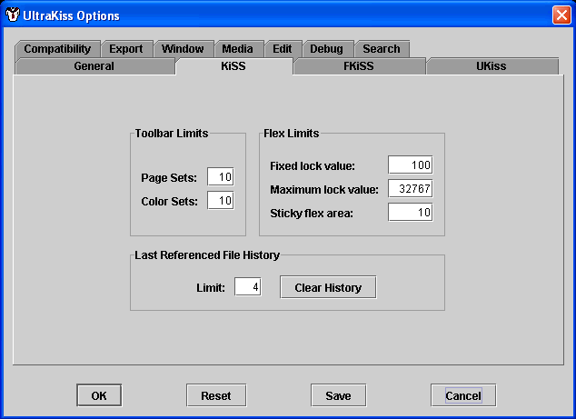
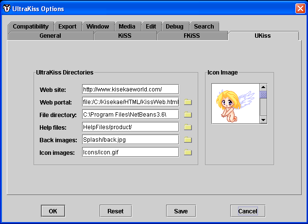
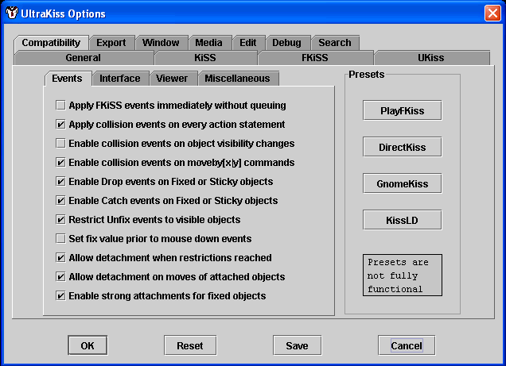
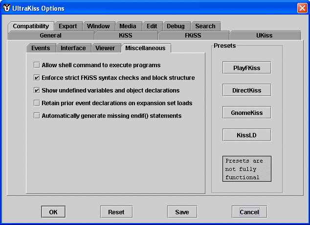
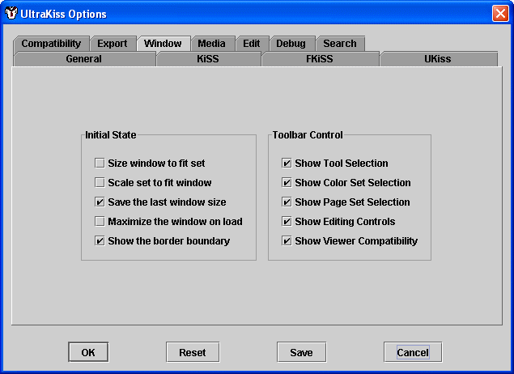

The Kisekae UltraKiss Program Options screen is a tabbed control panel that can be invoked through the Options menu. Buttons may be found at the bottom of the screen to accept any option changes, cancel changes, save the current options permanently, and reset all option values to factory initial values.

Host System. This option sets the user interface to follow the host operating system look and feel.
Cross Platform. This option sets the user interface to follow the Java standard cross platform look and feel.
Apple System. This option is set automatically if running on an Apple system.
English. If set, all program menu commands and all dialog messages will appear in English.
Japanese. If set, all program menu commands and all dialog messages will appear in Japanese.
Keep a file backup. If this option is set, the source file for every file written will will be renamed using a .BAK extension. Only one backup copy is retained.
Save from source. If this option is set, all files will be written as a copy of their original source contents if their contents have not changed. If this option is cleared, unchanged files will be written from their current memory contents.
Close on load. If this option is set, any previously loaded KiSS set is closed before a new set is loaded. If the option is not set then the currently active set is retained in memory and is restored if the new set load fails.
Show download prompt. If this option is set downloads of KiSS sets using the UltraKiss browser will prompt to save or open the set. If the option is cleared KiSS sets will be automatically opened.
Cache Images. This option, if set, enables Java 1.4 volatile image enhancements for improved graphic performance. Graphics rendering will use hardware characteristics of the video card. Results vary, so this option is not enabled by default.
Cache Audio. This option, if set, will retain the raw audio file data in memory and the audio file will be referenced from its memory contents. If this option is set then high memory utilization may occur. If this option is not set then audio file data is read and processed from the source file.
Cache Video. This option, if set, will retain the raw video file data in memory. Video files are played from their memory contents. If this option is set high memory utilization may occur. If this option is not set then video file data will be read from the source file.
Show Status Bar. If this option is set the program status bar will be initially displayed when the program is started. This option is linked to the initial setting for the program menu View Status Bar selection.
Show Toolbar. If this option is set the program toolbar will be initially displayed when the program is started. This option is linked to the initial setting for the program menu View Toolbar selection.
Show Tips on Start-up. If this option is set the helpful tips display is activated when the UltraKiss program is first started.
Auto Scroll. This option enables automatic scrolling of the screen viewing area if the configuration screen size exceeds the available screen size and an object is dragged outside of the viewing area. The viewport will scroll automatically as the object is dragged. If this option is not set then the viewport will not scroll and it will be possible to drag the object outside the viewport limits.
Limit Mouse Moves. This option can be used to limit user movement of objects to the active configuration screen size. The user will not be able to drag an object beyond the screen. If the option is not set then the user will be able to drag an object outside of the playing area. Any object dropped completely outside of the playing area cannot be picked up. Note that objects moved with FKiSS actions are, by default, limited to the playing area unless the move command specifies otherwise.
Limit FKiSS Moves. This option can be used to limit FKiSS programmed movement of objects to the active configuration screen size. Programmed moves will not be able to position an object beyond the screen. If the option is not set then programmed moves will be able to position an object outside of the playing area. Note that objects moved with FKiSS actions can override this limitation if the command specifies otherwise.

Page Sets. This sets the maximum number of page set buttons to show on the toolbar. If too many pages exist then a page shift control button will be shown on the toolbar. The page shift control updates the toolbar to show the next or prior group of page set buttons.
Color Sets. This sets the maximum number of color set buttons to show on the toolbar. If too many palette groups exist then a color shift control button will be shown on the toolbar. The color shift control updates the toolbar to show the next or prior group of palette buttons.
Fixed Lock Value. This parameter sets the maximum value for a sticky cel lock limit. Cels whose lock limits equal or exceed this value are permanently fixed in place and cannot be moved. Cels whose lock limits are greater than zero but less than this limit can move slightly but will snap back into place when dragged. Cels with lock values less than the fixed lock value will have their lock limit decreased by one each time the cel is accessed with the mouse. Cels whose lock limits are zero can be freely moved on the screen.
Maximum Lock Value. This parameter sets the maximum lock value for image cels. This value should be greater than or equal to the fixed lock value. Cels whose lock value equals or exceed this value are permanently fixed in place and will only respond to press() or release() events. Fixcatch(), catch(), fixdrop() or drop() events will not fire for cels that have maximum lock values.
Sticky Flex Area. This parameter specifies, in pixels, the maximum distance that a sticky cel can move before snapping back into place. The actual distance that a sticky cel can move is calculated as a factor of the sticky flex limit based upon the ratio of the current flex limit over the original flex limit. As the flex limit decreases the sticky cel can move further away from its starting location.
Limit. This parameter specifies the number of history items displayed on the File menu list. The history list can be cleared if required.
Enable Timer. This option, when set, enables the Alarm timer activity. This option must be set for FKiSS timer actions are to be processed.
Enable Events. This option, when set, enables all Event processing activities. This option must be set if FKiSS events are to be processed.
Enable Sounds. This option, when set, enables all FKiSS sound and music actions.
Enable Movies. This option, when set, enables the FKiSS movie action.
Enable Animation. This option, when set, enables all animated GIF graphic file display. If this option is not set animated GIF files will behave as normal GIF files.
Case Sensitive. This option, when set, ensures that all variable names are case sensitive. With case sensitive variables, the variable XyZ is not the same as variable XYZ.
Key Event Case. This option, when set, ensures that keyboard events are case sensitive. Specifically, if this option is set the key character returned on any keyboard action command will be an upper or lower case character. UltraKiss supports string variables and is capable of performing case sensitive comparisons. If the option is not set the character returned will always be an upper case character. This option is applicable to FKiSS 5 string processing commands.
Timer Period. This value sets the heartbeat period in milliseconds for the event timer activity. Increasing this value will reduce computation overhead but the UltraKiss program may become less responsive to FKiSS animation loops. To observe GNOMEKiSS performance this value should be set to 1.
Animation Period. This value sets the GIF animation heartbeat period in milliseconds. This value should not be changed as the animated GIF specification delay assume a 100 millisecond heartbeat. Animated GIF images will run faster or slower if this value is reduced or increased.
Event Handlers. This value sets the number of concurrent FKiSS event handlers that run simultaneously. Events are queued until an event handler is available to process the event. Increasing the number of event handlers beyond 2 can increase system overhead. To maintain consistency with single threaded KiSS viewers this value should be set to 1. Note that concurrent events cannot be processed until this value is greater than 1.

Web Site. This specifies the URL of the UltraKiss website. This is the default website used for Help file access if local help files are not found on your system.
Web Portal. This specifies the URL of the initial page for the UltraKiss portal. This, by default, refers to a predefined page that will point to the UltraKiss website.
File Directory. This specifies the path to the default directory for KiSS sets. This, by default, refers to the program installation directory.
Help Files. This specifies the location of the UltraKiss Help system, relative to the program installation directory.
Back Images. This specifies the location of the UltraKiss background images, relative to the program installation directory.
Icon Images. This specifies the location of the UltraKiss image icons, relative to the program installation directory.
This control can be used to alter the UltraKiss image icon.

Apply FKiSS Events Immediately. This option, if set, executes FKiSS events immediately. If the option is cleared events are queued for independent execution at the system's discretion. Single thread event models should set this option. Multithreaded event models should clear this option.
Apply collision events on every action statement. This option, if set, checks for movement collisions after every event action statement. If the option is cleared collisions are verified only at the termination of the event. If an event has multiple movements for the same object and collisions are to be recognized on each movement then this option should be set.
Enable collision events on visibility changes. This option, if set, will fire collision events if object visibility changes. If a collision is to be recognized when a hidden object overlays a visible object and the hidden object is made visible, then this option should be set. Currently, no known KiSS viewer implements this capability.
Enable collision events on movebyx/y commands. This option, if set, will fire collision events on individual movebyx/y action commands. Some KiSS viewers will not fire collisions for these move actions as positioning an object can require movement in both the X and Y dimensions, thereby causing multiple collision events to fire.
Enable Drop events on fixed or sticky objects. This option, if set, will fire drop events when objects with a non zero fix count are released with the mouse. Some viewers will only fire drop events id the fix count is zero.
Enable Catch events on fixed or sticky objects. This option, if set, will fire catch events when objects with a non zero fix count are picked up with the mouse. Some viewers will only fire catch events id the fix count is zero.
Restrict Unfix events to visible objects. This option, if set, will restrict unfix events to visible objects. This restriction applies to both mouse initiated activities and FKiSS initiated activities. Note that most viewers do not consider visibility when unfixing objects.
Set fix value prior to mouse down events. This option, if set, will alter the time at which the fix count is computed for unfix event recognition. Some viewers do this immediately upon mouse down. Other viewers do this computation later, after drop and fixdrop events have been processed. If this option is not set, unfix computations are made after the mouse is pressed and before the mouse is released.
Allow detatchments when restrictions released. This option, if set, will permit object detachment when restriction bounds are reached. DirectKiss has not implemented this behaviour and this is considered to be a DirectKiss fault.
Allow detatchments on moves of detached objects. This option, if set, will detach objects if they are moved with an FKiSS command. DirectKiss has not implemented this behaviour and this is considered to be a DirectKiss fault.
Enable strong attachments for fixed objects. This option, if set, will allow child objects to move an attachment chain if the child object is fixed. DirectKiss has not implemented this behaviour and this is considered to be a DirectKiss fault.

Use page context for ambiguous cels. This option, if set, uses the current page context to disambiguate ambiguous image cels. The FKiSS specification does not define how cels are to be selected if the same cel is used in more than one object. If this option is not selected the first cel identified will be chosen for ambiguous commands.
Apply action commands to all ambiguous cels. This option, if set, applies cel action commands to all cels with the same name. If this option is not selected the first cel identified will be chosen for ambiguous commands.
Enable FKiSS object moves on mouse controlled objects. This option, if set, applies FKiSS moves to mouse selected objects. This can move the selected object away from the mouse, although the mouse may still retain movement control.
Retain mouse control after FKiSS object movement. This option, if set, applies FKiSS moves to mouse selected objects. This can move the selected object away from the mouse, although the mouse still retains movement control. If this option is clear then the mouse loses control of the object.
Apply mouse movement limits to visible bounds. This option, if set, prevents dragging of objects off the playfield area.
Active key press is required for letkey and letkeymap. This option, if set, ensures that letkey() and letkeymap() action commands will only receive valid keystroke information if the action command is executed while a key is pressed. If this option is clear the key commands can receive the keystroke at any time.

Maintain DirectKiss %x and %y image offsets. This option, if set, writes cel offsets to the configuration file as individual %x and %y values. If this option is not set, offsets are written as a point with a %offset(x,y) syntax.
Implement DirectKiss absolute window positioning fault. This option, if set, interprets FKiSS windowsize() and viewport() command arguments as absolute offsets into the playfield. The original Japanese specification defines these offset values as relative values to the current window state.
Use DirectKiss mouse event bounding boz recognition. This option, if set, attempts to correct for DirectKiss errors with bounding box recognition on restrict() and detach() commands.
Invert PlayFKiss ghost setting logic. This option, if set, inverts the effect of ghost(0) and ghost(1) action commands.
Implement PlayFKiss setfix() fault. This option, if set, alters setfix() processing to emulate PlayFKiss.

Allow shell command to execute programs. This option, if set, enables execution of shell programs outside of UltraKiss.
Enforce strict FKiSS syntax checks and block structure. This option, if set, flags improper syntax and block structures in FKiSS code.
Show undefined variables and object declarations. This option, if set, will identify unused or undefined variables and objects in FKiSS code.
Retain prior event declarations on Expansion set loads. This option, if set, retains previous event code when expansion sets are loaded. If the expansion set contains updated or replaced definitions of prior events then the new definitions are used.
Automatically generate missing endif() statements. This option, if set, automatically generates missing endif() statements where necessary.

Set relative paths on image imports. This option, if set, retains relative directory paths for cel images imported from subordinate directories to the CNF configuration file. If this option is clear the cel name does not retain directory information.
Import all images as CEL files. This option, if set, converts all imported images to CEL format. The CNF configuration file refers to the image as a cel image. This option can be used to perform automatic image conversion during import. FKiSS statements coded after import must reference the cel name.
Write image offsets to CEL files. This option, if set, ensures that cel offset values are saved when the image cel is written. If ambiguous cels exist in the set with different offsets this can cause image placement problems when the set is reloaded. If offset values are not written to the cel file then offsets are maintained in the CNF with %offset(x,y) tags.
Export GUI components as CEL files. This option, if set, will convert all non-input or read only UltraKiss component cels such as buttons and labels to cel images when the set is saved. Note that input components such as lists and comboboxes cannot be converted to a single CEL image and will be retained as component cels.
Export all images as CEL files. This option, if set, converts all images to CEL or other image formats when the set is saved. This option can be used to convert KiSS images. FKiSS statements in the CNF file are automatically adjusted to reference the new image type.

Size window to fit set. This option, if set, automatically resizes the UltraKiss window size to fit the playfield size of the loaded set.
Scale set to fit window. This option, if set, will automatically scale the set to fit the UltraKiss window size. Note that sets are only magnified and not reduced in size.
Save the last window size. This option, if set, retains the last known window size and location for UltraKiss and all tools when UltraKiss is terminated. Windows will be restored to the proper size and position on next execution.
Maximize window on load. This option, if set, automatically maximizes the UltraKiss window and all tools to fit the full screen, when loaded.
Maximize window on load. This option, if set, displays a border around the playfield.
Show Tool Selection. This option, if set, displays the UltraKiss tool buttons on the toolbar.
Show Color Set Selection. This option, if set, displays the set color buttons on the toolbar.
Show Page Set Selection. This option, if set, displays the page buttons on the toolbar.
Show Editing Controls. This option, if set, displays the UltraKiss edit selection buttons on the toolbar.
Show Viewer Compatibility. This option, if set, displays the UltraKiss viewer compatibility buttons on the toolbar.

Use Java Sound. This option, if set, requests that the Java Sound system be used for playback of sequencer files such as MIDI. If this option is not set Java Media Framework will be used for all audio and video files. If Java Media Framework is not installed Java Sound will be used for all audio playback regardless of this setting.
Audio. This option, if set, retains the raw audio file data in memory. Audio files are played from their memory contents. If this option is not set then audio file data is read from the source file. If this option is set, high memory utilization may occur.
Video. This option, if set, retains the raw video file data in memory. Video files are played from their memory contents. If this option is not set then video file data is read from the source file. If this option is set, high memory utilization may occur.
Loop Playback. This is a Media Player option. This option instructs the Media Player to repeat the playback of the active media file or play list upon completion of the media file.
Minimize Audio. This is a Media Player option. This option instructs the Media Player to minimize itself when an audio media file begins.
Full Screen Video. This is a Media Player option. This option instructs the Media Player to show video files in a maximized window when the media file begins.
Center Frame. This is a Media Player option. This option instructs the Media Player to center the frame in the screen when the media file begins.
Retain Aspect Ratio. This is a Media Player option. This option instructs the Media Player to maintain the original video aspect ratio if the window is resized. If this option is not set the movie will be scaled to fit within the actual window size.
Stop Music when switching to a new page set. This option, if set, will stop any music files that are actively playing when a new page set is selected. If this option is on the ability to Resume Media Player when Music stops is disabled.
Suspend Media Player when Music starts. This option, if set, will suspend any media player output if a music command is initiated from the data set. This option can be used to ensure that the media player does not compromise playing of data set music.
Resume Media Player when Music stops. This option, if set, will restart any suspended media player after a data set music file ends.

Undo Limit. This option specifies the maximum number of undo actions that are queued. Edits that exceed this number cannot be undone.
CNF file comment column. This option specifies the minimum column number which will be used for comments on FKiSS code or other CNF statements.
FKiSS block indent spacing. This option specifies the number of spaces that FKiSS code will be indented for nested if-statements or loop commands.
Enable Edits. This option, if set, enables all UltraKiss edit features. If this option is cleared edit functions cannot be used.
Enable Security. This option, if set, disables all UltraKiss edit features and all ability to view or change the set configuration. The ability to change options is also disabled.
Use alt key for edit selection. This option, if set, allows alt-key selection of objects on the screen. This generally applies to Windows systems. Linux systems may require that this option be disabled. Apple systems use the command key instead of the alt key.
Edit selection on. This option, if set, enables initial edit selection when UltraKiss is started. This feature can be turned off as right mouse clicks may interfere with play if edit features are not desired.
Pause on Event. This
toggle sets the FKiSS Editor option to breakpoint on the next event or the next
action statement executed.
Pause on Action. This
toggle sets the FKiSS Editor option to breakpoint on the next event or the next
action statement executed.
Show breakpoint end message. This option enables the FKiSS editor display of a popup dialog when the end of a breakpoint event is reached. This display can be disabled if desired.
Close FKiSS statements with a comment. This option ensures that every FKiSS statement is written with a terminating semicolon comment if the set is saved.

Log File. This text box identifies the name of the UltraKiss log file. This log file is created in the initial program directory.
Show Object Selection. This option, if set, will display the name of the selected group object and cel object in the program status bar when selected.
Log Control Messages. This option, if set, writes various UltraKiss diagnostic control messages to the log file. Control messages show event handler activation and termination messages, configuration initialization and termination messages, and other control functions.
Log Load Messages. This option, if set, writes log messages to the UltraKiss log file for each file loaded by the program.
Log Edit Messages. This option, if set, writes a log record of user edit actions such as cut, copy, paste, select, move, and import activities to the log file.
Log Image Transforms. This option, if set, writes a log record of all image edit operations to the UltraKiss log file.
Log FKiSS Breakpoints. This option, if set, traces the FKiSS Editor diagnostic breakpoint activities. Log file entries are written for each breakpoint processed.
Log Media Events. This option, if set, writes low level media stream processing events to the UltraKiss log file. This option can create a significant amount of trace output.
Log Event Sequences. This option, if set, traces UltraKiss FKiSS events. Each event processed is time stamped and written to the log file.
Log Event Actions. This option, if set, traces all UltraKiss FKiSS action commands. This option can create a significant amount of trace output.
Log Variable Assignments. This option, if set, writes a record of all assignments to FKiSS variables during UltraKiss event processing. This option can create a significant amount of trace output.
Log Sound Events. This option, if set, writes all high level audio media control events to the UltraKiss log file.
Log Movie Events. This option, if set, writes all high level video media control events to the UltraKiss log file.
View. The View command will show the current log file in the text editor.
Clear. The Clear command will erase the current log file contents.
Print. The Print command will print the current log file on the system printer.

Use Default Search Options. This option, if set, disables the remaining options in this section and defaults values for KiSS file indexing and directory search operations.
Next Document: Object Properties
Prior Document: Toolbar Commands
Copyright (c) 2002-2023 William Miles